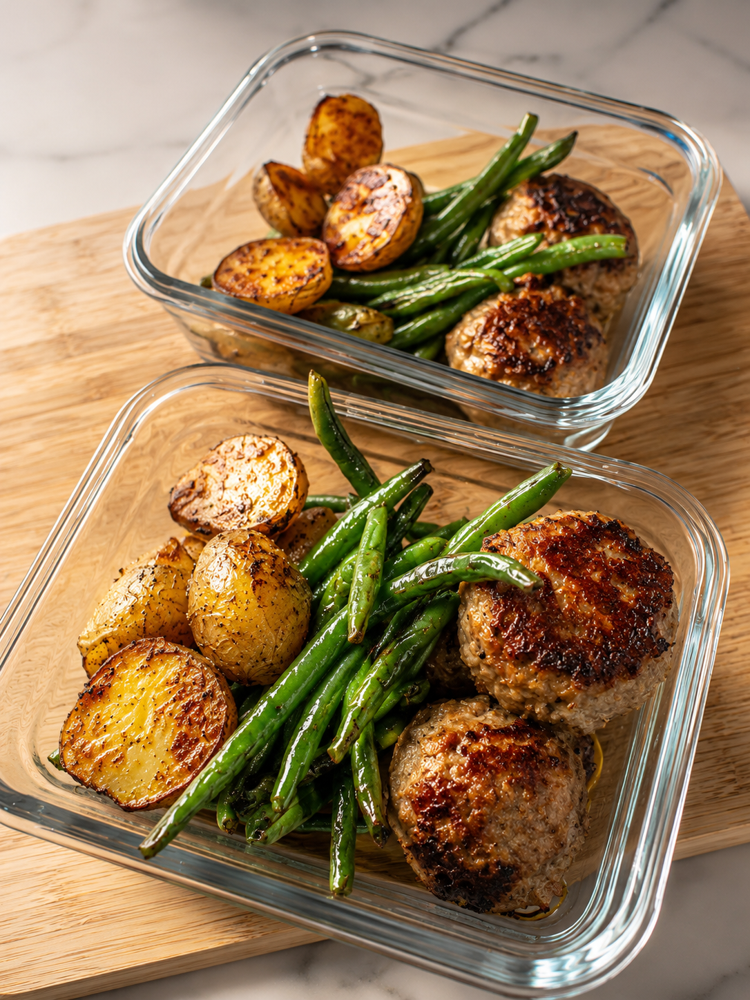
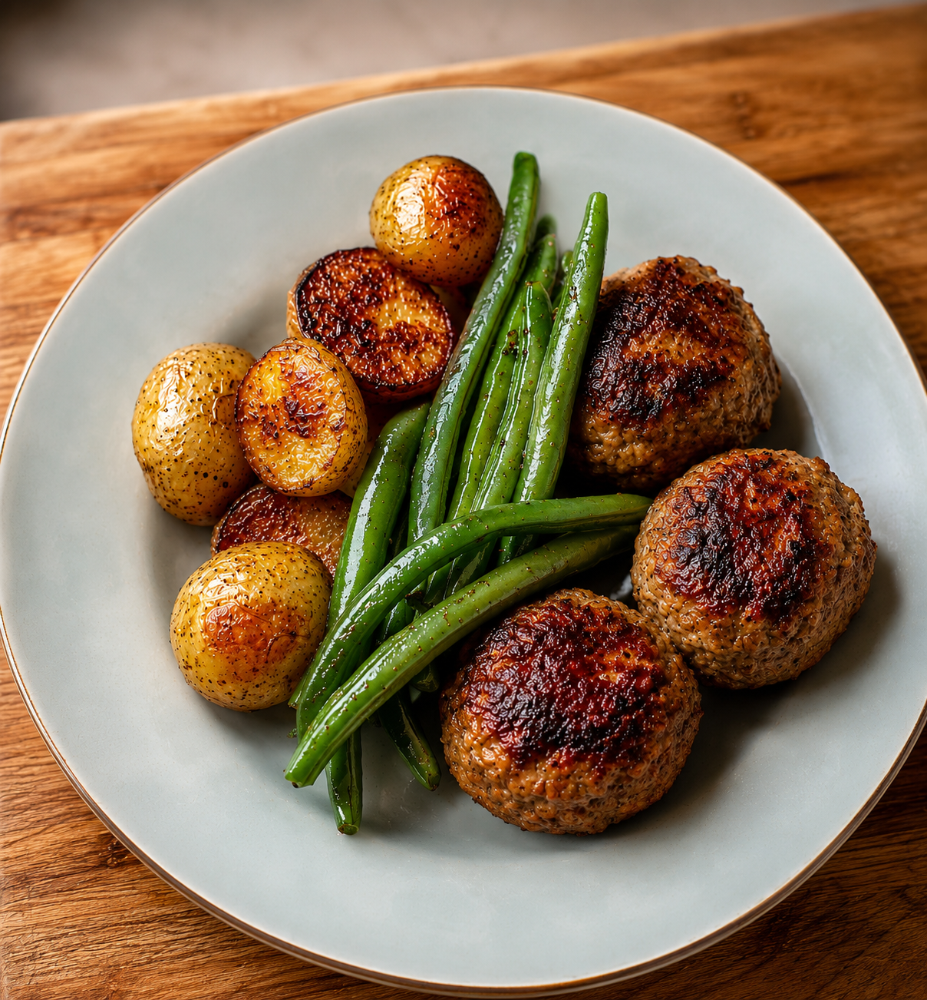

From the kitchen
Baked turkey meatballs with potatoes & green beans
The first meatball recipe I ever made, and the first bite is what got me hooked

Why this one made the rotation
This was the recipe that got me into making meatballs in the first place. I remember the first bite out of the oven and thinking I'd been overcomplicating meatballs my whole life for no reason. It's stuck around ever since, and it's flexible enough to bend around whatever the week looks like. Some nights I'll plate one serving of meatballs with the potatoes and green beans and call it dinner. Other times I'll save the rest of the meatballs, no sides, and toss them into a pasta dish the next day so the second meal takes almost no effort at all.
Why it works for runners
- 35 to 40g of protein per serving for muscle repair
- Baby potatoes replenish glycogen stores after a hard effort
- Green beans bring fiber, vitamin C, and potassium
- A balanced plate that's satisfying without feeling overly rich
Ingredients (4 servings)
Turkey meatballs
- 1½ lbs lean ground turkey
- 1 egg
- ½ cup panko breadcrumbs
- 2 cloves garlic, minced
- 2 Tbsp chopped parsley
- 1 tsp Italian seasoning
- Salt and pepper, to taste
Sides
- 1½ lbs baby potatoes, halved
- 1 lb fresh green beans
- 2 Tbsp olive oil
- Garlic powder
- Paprika
- Salt and pepper, to taste
Instructions
- Preheat oven to 425°F (220°C).
- Mix the meatball ingredients together and form into meatballs, whatever size you prefer. I tend to land on about 10.
- Toss the halved potatoes with the olive oil, paprika, garlic powder, salt, and pepper. Roast for 30 to 35 minutes.
- Bake the meatballs for 18 to 20 minutes, until they reach 165°F internally.
- During the last 8 to 10 minutes, roast or steam the green beans, then season lightly with salt, pepper, and a squeeze of lemon.
- Plate the meatballs with the roasted potatoes and green beans.
A few notes from making this a bunch of times
- Don't overwork the meat. Mix just until everything's combined. Overmixing is the most common way turkey meatballs turn out dense instead of tender.
- Portion for two meals. This recipe holds up well split in half: one plate with potatoes and green beans tonight, the rest of the meatballs saved plain for pasta the next day.
- Lean turkey needs a little help staying moist. The panko and egg do a lot of that work, so don't skip them even if you're tempted to cut corners.
- Leftovers reheat well. A low oven or air fryer keeps the meatballs from drying out; the microwave works in a pinch.
Approximate nutrition (per serving)
- Calories: ~560
- Protein: 38g
- Carbohydrates: 42g
- Fat: 20g
- Fiber: 7g
Meal-prep tip
Cook the entire batch on a Sunday and portion it into containers. It stays fresh in the refrigerator for up to 4 days and reheats well in the microwave or air fryer, so the hardest part of the week's dinners is already done.
